CAL_mosPhaBuild call:
Computes a single energy PHA (in ADU) for each event from a weighted
sum of the E, and the residual background 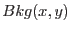 computed in CCDBKG,
assumed not to vary with time (i.e. the time series
output from CCDBKG is not used).
The coefficients  ,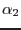,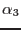,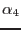 are defined by the
CAL from a CCF file. They have 1 value for each of the 32 patterns.
,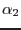,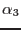,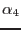 are defined by the
CAL from a CCF file. They have 1 value for each of the 32 patterns.
E is entered as real in order to allow randomisation before calling
CAL_mosPhaBuild.
Two different formulaes are used depending on whether is positive or negative.
If
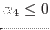 (and normally 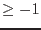), then the idea is
to use a weighted average of 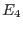 and 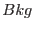 to estimate the
local background. This is adapted to compact events.
| 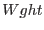 | 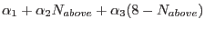 | ||
| 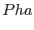 | 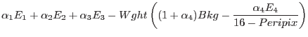 | (1) |
If
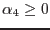, then the idea is to use as part of the signal,
and estimate the local background entirely from .
This is adapted to events spread out over many pixels.
| 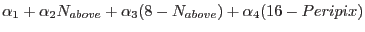 | |||
| 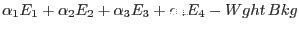 | (2) |
In both cases 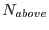 is the number of secondary pixels above threshold
(for example 1 for bipixels).
E is used only where PERIPIX  7.
E and E are not used if next to a bad line or column.
7.
E and E are not used if next to a bad line or column.
Depending on the calibration results (not yet known) the 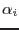 may depend on the pattern and possibly also on energy. The idea is then to loop on emenergy for different selections on the events.
The C++ possible call are :
CalReal32Vector &EnergyCombinator::combine(const CalReal32Vector &energye1,
const CalInt16Vector &energye2,
const CalInt8Vector &pattern,
CalReal32Vector &pha, // out
const CalReal32Vector &locbkg,
const CalInt16Vector &energye3,
const CalInt16Vector &energye4,
const CalInt8Vector &peripix,
const CalInt32Vector &flag
)
Input:
energye1 : array of real32 with event energy E1
energye2 : array of int16 with event energy E2
energye3 : array of int16 with event energy E3 (optional)
energye4 : array of int16 with event energy E4 (optional)
pattern : array of int8 with event pattern number
peripix : array of int8 with event peripix number (optional)
flag : array of int32 with event flag (optional)
locbkg : array of real32 with event local background (optional)
Out:
pha : array of computed event PHA
energye3, energye4, peripix and flag : are present or not in the same time, while locbkg is optional independently. Which leads to 4 possible calls.
CalReal32Vector &EnergyCombinator::combine(const CalReal32Vector &energye1,
const CalInt16Vector &energye2,
const CalInt8Vector &pattern,
CalReal32Vector &pha // out
)
CalReal32Vector &EnergyCombinator::combine(const CalReal32Vector &energye1,
const CalInt16Vector &energye2,
const CalInt8Vector &pattern,
CalReal32Vector &pha, // out
const CalReal32Vector &locbkg
)
CalReal32Vector &EnergyCombinator::combine(const CalReal32Vector &energye1,
const CalInt16Vector &energye2,
const CalInt8Vector &pattern,
CalReal32Vector &pha, // out
const CalInt16Vector &energye3,
const CalInt16Vector &energye4,
const CalInt8Vector &peripix,
const CalInt32Vector &flag
)
CalReal32Vector &EnergyCombinator::combine(const CalReal32Vector &energye1,
const CalInt16Vector &energye2,
const CalInt8Vector &pattern,
CalReal32Vector &pha, // out
const CalReal32Vector &locbkg,
const CalInt16Vector &energye3,
const CalInt16Vector &energye4,
const CalInt8Vector &peripix,
const CalInt32Vector &flag
)
The F90 possible call will be :
subroutine CAL_mosPhaBuild(energye1, energye2, pattern, pha )
subroutine CAL_mosPhaBuild(energye1, energye2, pattern, pha, &
locbkg )
subroutine CAL_mosPhaBuild(energye1, energye2, pattern, pha, &
energye3, energye4, peripix, flag)
subroutine CAL_mosPhaBuild(energye1, energye2, pattern, pha, &
locbkg, energye3, energye4, peripix, flag)